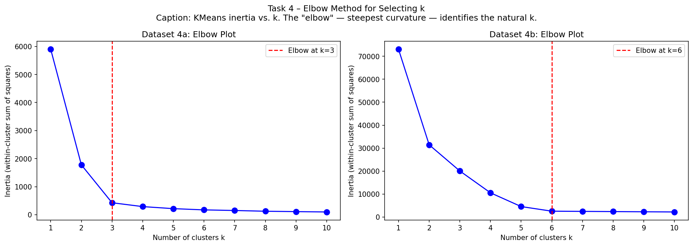

Task 4 — Elbow Method
Use the elbow method to discover the most likely value of k used to generate datasets 4a and 4b. You can use KMeans, KMedoids, or both.
- Figures of the elbow plots you generated.
- A table with the k-values you think were used to generate each dataset.
- Explanation why you chose those values.
Notice these datasets are not 2D anymore — the elbow method is especially useful when you can't directly visualise the data.
Code
k_range = range(1, 11)
fig, (ax_4a, ax_4b) = plt.subplots(1, 2, figsize=(14, 5))
for ax, (name, fname) in zip([ax_4a, ax_4b],
[('4a','dataset-task-4a.csv'),('4b','dataset-task-4b.csv')]):
X_e = pd.read_csv(fname).values
inertias = [KMeans(n_clusters=k, random_state=42, n_init=10).fit(X_e).inertia_
for k in k_range]
ax.plot(list(k_range), inertias, 'bo-', markersize=8)
ax.set_xlabel('k'); ax.set_ylabel('Inertia'); ax.set_title(f'Dataset {name}: Elbow')
ax.xaxis.set_major_locator(MaxNLocator(integer=True))
ax_4a.axvline(x=3, color='red', linestyle='--', label='Elbow k=3'); ax_4a.legend()
ax_4b.axvline(x=6, color='red', linestyle='--', label='Elbow k=6'); ax_4b.legend()
plt.tight_layout(); plt.show()
How the elbow method works
Inertia = sum of squared distances from each point to its assigned centroid. As k increases, inertia always decreases (more clusters = smaller groups = closer to centroid). If a "true" k clusters exist, the rate of decrease is steep before that k and flattens after it — because beyond the true k we are splitting real clusters, gaining little quality improvement. The "elbow" = the point of steepest curvature = the natural k.
Result

Inertia values
| k | Dataset 4a inertia | Dataset 4b inertia |
|---|---|---|
| 1 | 5900 | 73 062 |
| 2 | 1778 | 31 452 |
| 3 | 428 ← elbow | 20 063 |
| 4 | 290 | 10 551 |
| 5 | 217 | 4 565 |
| 6 | 173 | 2 558 ← elbow |
| 7 | 151 | 2 466 |
| 8 | 125 | 2 380 |
Conclusion
| Dataset | Features | Rows | Chosen k |
|---|---|---|---|
| 4a | 3 | 50 | 3 |
| 4b | 5 | 500 | 6 |
Dataset 4a — k=3: Inertia drops sharply from k=2→3 (1778→428, −76%), then slows dramatically at k=3→4 (428→290, −32%). The elbow is clearly at k=3.
Dataset 4b — k=6: Inertia drops substantially through k=1→6 (73062→2558), then nearly plateaus: k=6→7 drops only 92 compared to k=5→6's drop of 2007 (−96% reduction in drop rate). The elbow is at k=6.